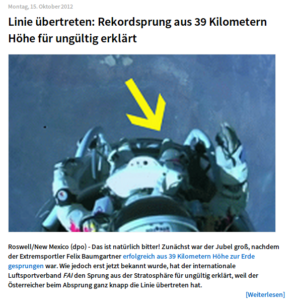
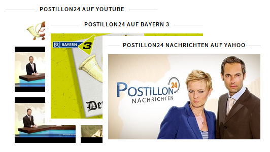
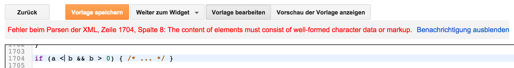

Der Postillon und seine Technik
Joern Bernhardt


Der Postillon


Blogger
- Posts
- Seiten
- Widgets
- XML Template
Theoretischer Workflow
Stack
pic des Stacks und mit Fragmenten Sachen durchstreichen
Praktischer Workflow
Vorlage bearbeiten
Preview anschauen
Vorlage angucken
Nach Hacks googlen
Vorlage bearbeiten
Preview anschauen
in Panik geraten
nochmal von vorn
Wieso Blogger?
- Kostenlos
- Skaliert ohne Probleme
- ... hohe Sicherheit durch Einschränkungen der Möglichkeiten
- ... hohe Benutzerfreundlichkeit durch Minimierung der Anzahl an Features
- ... sehr übersichtlich, da man nur in einem Template arbeiten muss
- ... ist dank vieler Vorgaben sofort betriebsbereit
Ein paar Hacks
Speicherprobleme?
Ist doch klar:
if (a < b && b > 0) { /* ... */ }Mobile Vorgaben deaktivieren
<span id="skin-hack">
<style type="text/css"> /*
<b:skin><![CDATA[ */ ]]></b:skin>
</span>Labels im JavaScript nutzen
<b:if cond='data:blog.pageType == "item"'>
<script type='text/javascript'>
(function() {
var blogLabels = [];
<b:loop values='data:post.labels' var='label'>
blogLabels.push('<data:label.name/>');
</b:loop>
doSomethingWithLabels(blogLabels);
}());
</script>
<b:else/>
<script type='text/javascript'>
doSomethingWithLabels([]);
</script>
</b:if>Ein paar Tipps
Build-Setup macht Sinn
- Gulp
- Grunt
- Shell-Skripte
- ...
Aufspalten der Mobil- und Desktop-Styles
- Ein CSS für Desktopansicht
- Ein CSS für mobile Ansicht
- Ein CSS für beide
Skripte...
- Bildergalerie erstellen
- Archivartikel austauschen
- Videos einbinden
Bonus
Newsticker
( in Newsticker #)
( in Newsticker #)
( in Newsticker #)
Newsticker
- Shared Server
- Cache durch Google Widgets
- App ist Cordova
- Push Nachrichten bloß nicht selbst implementieren!
Sonstige Learnings
- Tracking ist wichtig
- APIs für Werbeanzeigen sind unschön
- Vermarkter sind normalerweise keine Programmierer
- ... Kunden meist auch nicht :)
Dankeschön!
Joern Bernhardt